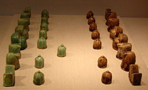

Home
Шатрандж
В шатрандж играли на квадратной доске размером 8x8 полей, аналогичной шахматной. В игре участвовали два игрока, каждый из них имел по одному комплекту фигур своего цвета; в средневековых манускриптах стороны обычно называются красными и чёрными, реже белыми и чёрными. В начале партии фигуры располагаются по противоположным сторонам доски, полностью аналогично современным шахматам, за исключением того, что королей и ферзей можно было поменять местами в начальной расстановке фигур, но короли в любом случае должны были стоять друг напротив друга.
В комплект для игры в шатрандж входят следующие фигуры:
Король (шах, как в современных шахматах, ходит на одно поле в любом направлении, кроме полей, находящихся под ударом фигуры другого цвета. Ситуация, когда король находится под боем (может быть взят противником на следующем ходу), называется шах. Игрок, чей король оказался под шахом, должен следующим ходом вывести его из-под шаха или закрыться от шаха.
Ладья (рух, как в современных шахматах, перемещается по вертикали или горизонтали на любое количество полей.
Слон (фил, ходит по диагонали через одно поле в любом направлении, причём поле, через которое делается ход, может быть занято. Слон таким образом за всю партию мог попасть только на восемь полей доски и не мог напасть на слона противника, даже ходящего по полям того же цвета.
Конь (фарас), как в современных шахматах, перемещается «Г-образным» ходом и может «перепрыгивать» фигуры.
Ферзь (фарзин,) предшественник современного ферзя, однако перемещался только на одно поле по диагонали в любом направлении. Ферзи в начальной позиции стояли на полях противоположного цвета, так что ферзь одного игрока не мог напасть на ферзя противника.
Пешка (байдак, ходит на одно поле вперёд и бьёт по диагонали на одно поле вперёд (как в современных шахматах, за исключением того, что не имеет хода на два поля из начальной позиции и соответственно взятия на проходе. Пешка, достигшая конца доски, превращается в ферзя, при этом возможное количество ферзей на доске не ограничивалось.
Игроки делают ходы по очереди, как в современной игре. Фигура может быть поставлена на пустое поле доски или на поле, занятое фигурой противника. Во втором случае фигура противника считается взятой, снимается с доски и более в игре не участвует. Побеждает игрок, который объявил мат королю противника, съел все его фигуры (оставил «голого» короля) или добился положения, при котором противник не может пойти ни одной фигурой (пат, по правилам современных шахмат — это ничья). Если «голый» король следующим ходом тоже съедал последнюю фигуру другого цвета, объявлялась ничья, но в Хиджазе за королём такого последнего хода не признавалось
(источникам эта региональная вариация правил известна как «мединская победа»).
